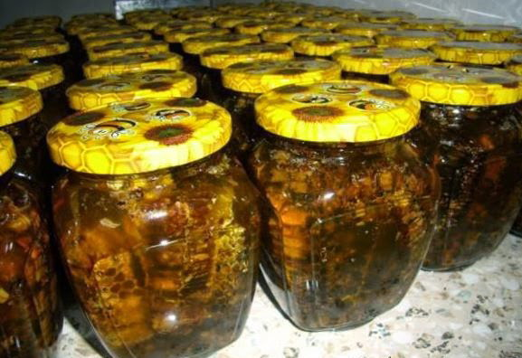

Нещодавно прочитав в інтернеті, що сьогодні імпотенцією або статевою слабкістю страждають від 20 до 40%
чоловічого населення нашої планети. Все більший попит мають штучні стимулятори чоловічої сили. Аптечні
прилавки завалені віагрою і її аналогами. Але чи коштують вони тих побічних ефектів, від яких потім
доводиться страждати.
Спостерігаючи за літніми бджолярями, яким давно перевалило за сімдесят, я нерідко ловив себе на думки, що їх життя,
в доки далекі для мене роки, не так вже нудне і позбавлене смаку, як це може здатися на перший погляд.
За розмовою впадав у вічі непідробний інтерес дідуся-бджоляру до молодих жінок, що проходять мимо. У відповідь на
моє здивування старий з хитрим примруженням лише незручно знизував плечима. Потрібно ж, такий старий, думав я, а
живчик ще той. Тоді я ще нічого не знав про пергу.
Коли ви починаєте вживати пергу, то розумієте що все може бути по іншому. Яким чином може допомогти перга проти
імпотенції? Насправді, все дуже просто. Нагадаю, що в цій статті йдеться про квітковий пилок, законсервований
бджолами їх кисломолочними ферментами з медом і що є не що інше, як чоловічий статевий гормон рослин. Для нас,
чоловіків, це цінний біологічно активний комплекс, що покращує відтворюючу функцію організму. Той факт, що перга
перевершує м'ясо в п'ять разів тільки за змістом білка вже примушує замислитися. По силі дії на організм вона
перевершує квітковий пилок в три рази. Одним словом, перга це концентрат чоловічої статевої енергії, природна
віагра без побічних ефектів.
А сила перги ось в чому:
- перга збільшує рухливість і час життя сперматозоїдів;
- її щоденне вживання збільшує кількість і якість сперми;
- перга активно очищає кишечник і організм в цілому;
- сприяє зачаттю і лікує безпліддя, імпотенцію, фригідність і простатиты різної етіології;
- вживання перги підвищує еластичність посудин і зміцнює сердечний м'яз;
- вагітним жінкам перга рекомендується для поліпшення формування плоду в період його внутріутробного розвитку;
- підвищуючи потенцію, перга зміцнює силу бруньок і відсовує на довгі роки передчасне старіння організму;
- для вегетаріанців перга це краще джерело білків і вітамінів;
Лікування пергою слід проводити курсами тривалістю 1 місяць. Приймають її тричі в день за півгодини до їди.
Злегка кислувата і дуже приємна на смак, перга добре розсмоктується у роті, де, власне, і починається активне
засвоєння її мікроелементів. Перга добре взаємодіє з людською слиною і для досягнення максимального лікувального
ефекту запивати її водою не рекомендується.
Добова норма перги для підтримки чоловічого здоров'я складає 18 мг(для здорових чоловіків), у разі імпотенції дозу
необхідно багаторазово збільшити від 10гр і вище. При цьому слід пам'ятати, що перга, яку продають на ринках і у
бджільницьких магазинах, витягнута із стільників і висушена в сушарних шафах, на жаль, вже втратила величезну
частину своїх лікарських властивостей.
 Свіжа перга в стільниках довго не зберігається, її тут же вражає пліснява і воскова міль. З метою збереження цінності продукту я пропоную до вживання свіжу пергу в стільниках з вулика, залиту медом в якості консерванта. Користь від її вживання буде максимальною.